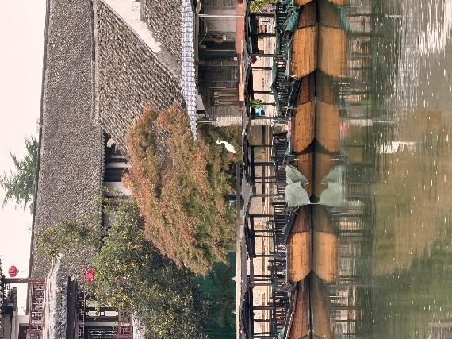
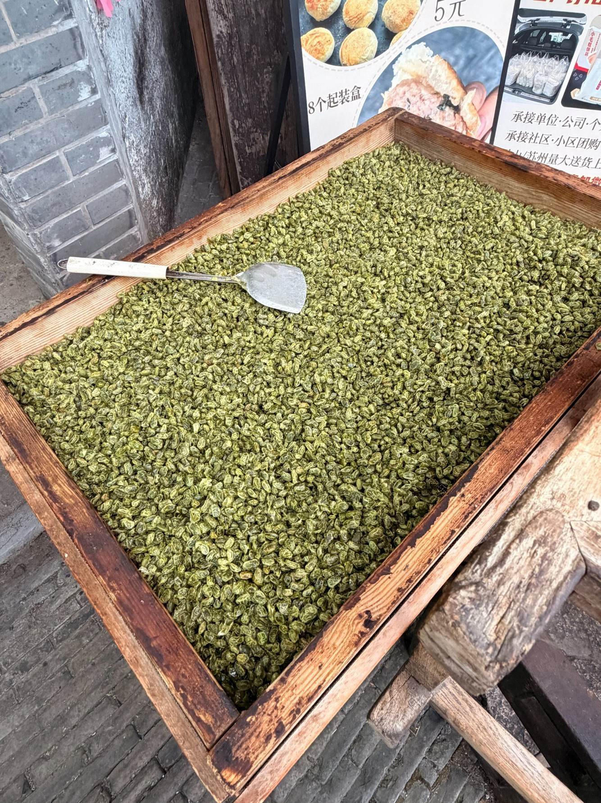
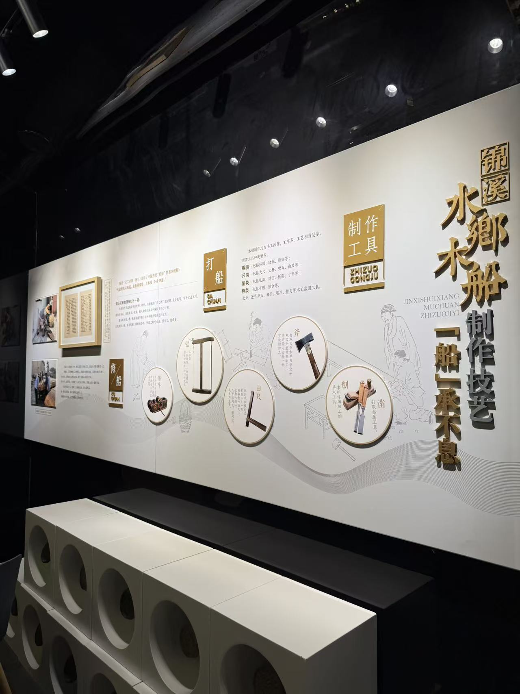
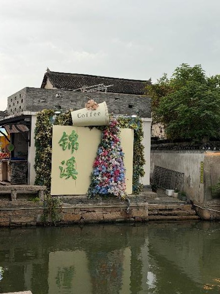

01 Jinxi · Weather in everyday life
Weather and
everyday life
In Jinxi, we began to notice how weather touches everyday life. Wind and rain affect boat trips, canal-side shops depend on visitors, and food drying depends on the weather. Weather shapes how people travel, work, and run their businesses.
- 01 Start with Jinxi
- 02 Compare forecasts and observations
- 03 Explore weather in daily life

Start with everyday scenes in Jinxi. Then compare forecasts with recorded weather, and explore how changing conditions may shape life in a city.
Field observations
In Jinxi, weather is part of everyday life.
Boats, canal-side shops, food drying, and traditional crafts connect weather with travel, work, and local business. These scenes are where our questions begin.



Select a context to see how weather can affect it


Design handoff
From field observation to weather-risk information
Jinxi’s water-town tourism, food processing, and traditional crafts show that weather is part of everyday decisions. This raises a broader question: how can people understand different forecasts and turn uncertain information into a clearer picture?
- Where it begins
Weather touches everyday life
Boat trips, local shops, and food drying all depend on weather conditions.
- The question
How should we read a forecast?
Different forecasts can tell different stories. What seems likely, and how sure can we be?
- What this site explores
Predictions beside actual weather
Compare public forecasts with recorded conditions to see what was expected and what happened.

| Category | Field observation | Weather connection | Information need |
|---|---|---|---|
| Tourism services | Boats and canal-side coffee depend on outdoor space and visitor movement. | Heat, rainfall, and outdoor comfort may change travel and time spent outdoors. | How might the weather change? Do different forecast signals agree? |
| Food processing | Smoked beans involve drying, storage, transport, and sale. | Temperature, humidity, and rainfall may change processing and storage conditions. | When might unfavorable weather occur? How uncertain are the forecasts? |
| Traditional craft | Brick-making and wooden-boat craft show links among materials, labour, and nature. | Some production stages may be sensitive to temperature, humidity, rainfall, and timing. | How can simple weather-risk information support production planning and judgment? |
Africa · Malawi · A simulated household in a documented setting
Thoko: keep drying the grain, or bring it in?

Thoko lives with her family in Rumphi, northern Malawi. Their small plot provides food, and they sell some produce to support daily life. After harvest, Thoko and her family spread maize out to dry, hoping to use the sunshine before storing it.
They are not entirely without forecasts: radio carries weather reports, and a phone brings occasional messages. But a broad forecast is hard to apply to their village, and scattered messages do not explain when rain might arrive or how certain the expectation is. What they lack is timely, locally relevant information they can understand.
Keep drying, and unexpected rain could wet the grain and require more work. Bring it in early, and they may miss a useful dry spell. With limited storage and income, either choice affects labour, food, and household spending. They must decide without a clear picture of tomorrow's weather.
Their questions are simple: what is tomorrow likely to bring, how certain is that expectation, and what should we prepare for?